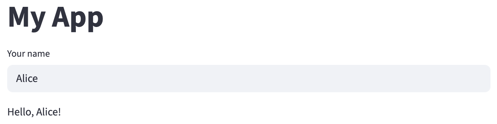
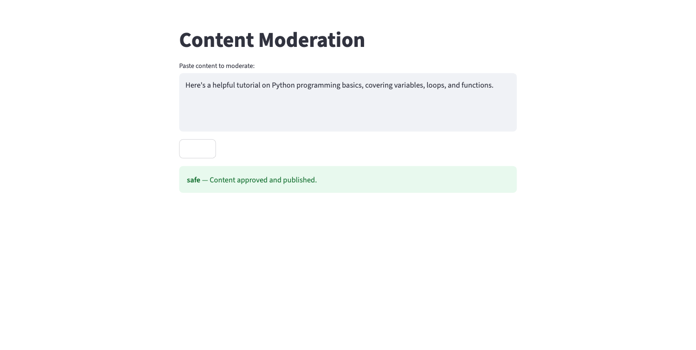
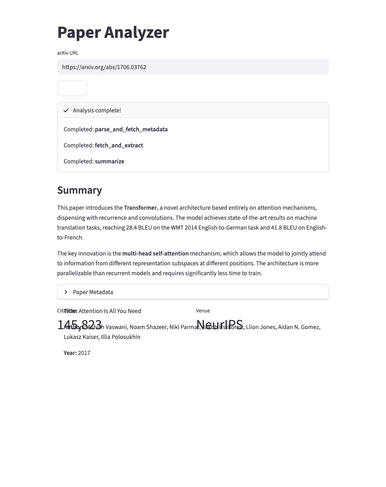
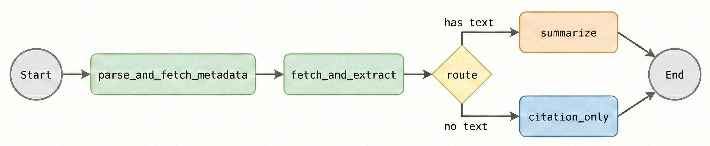
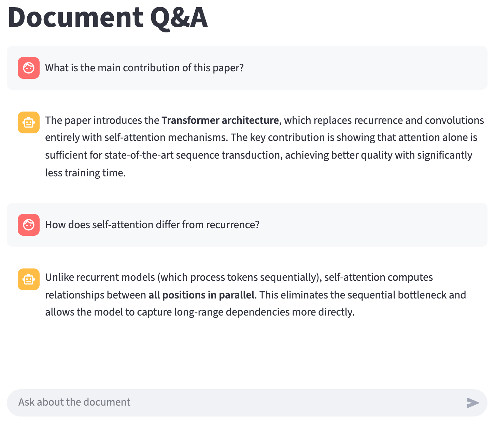

Streamlit Interfaces
2026-03-03
Today’s goals
- Use Streamlit to build web apps in pure Python
- Understand the rerun execution model
- Wrap a LangGraph workflow in a web interface
- Show per-node progress with LangGraph’s
stream() - Manage chat history with
st.session_state
Same workflow, different interface
| Deck 08 (CLI) | Deck 09 (Web) |
|---|---|
pipeline.invoke({...}) called from Typer |
pipeline.invoke({...}) called from Streamlit |
| Input via CLI arguments | Input via text boxes and buttons |
Output via print() |
Output via st.write() |
python app.py args |
streamlit run app.py → opens localhost:8501 |
What is Streamlit?

Script reruns top to bottom on every interaction (e.g., pressing Enter in the text input).
The rerun model

Warning
Variables reset on every rerun unless stored in st.session_state.
Common display elements
import streamlit as st
st.title("Main Title") # Large heading
st.header("Section Header") # Medium heading
st.markdown("**Bold** and *italic* text") # Markdown
st.success("This worked!") # Green box
st.warning("Be careful!") # Yellow box
st.error("Something failed!") # Red box
st.info("FYI") # Blue boxEach function writes to the page in order, top to bottom.
st.write() — the Swiss army knife
Auto-detects markdown, dataframes, charts, and more:
st.markdown() always treats input as markdown. Unlike st.write, it also supports raw HTML:
Input widgets
Important
st.button() returns True only during the rerun triggered by that click. On the next rerun, it’s False again.
Showing progress
st.spinner shows a loading indicator while the block runs. Without it, the page looks frozen during slow operations like LLM calls.
Wrapping a Non-Conversational Workflow
Example 1: Content Moderation

User pastes text → “Classify” → sees color-coded result (green = safe, yellow = questionable, red = harmful).
The workflow
moderation.py
class ModerationState(TypedDict):
content: str
classification: str | None # "safe", "questionable", "harmful"
result: str | None
def build_moderation_workflow():
graph = StateGraph(ModerationState)
graph.add_node("classify", classify_content)
graph.add_node("publish", publish)
graph.add_node("human_review", human_review)
graph.add_node("reject", reject)
graph.add_edge(START, "classify")
graph.add_conditional_edges("classify", route_content)
graph.add_edge("publish", END)
graph.add_edge("human_review", END)
graph.add_edge("reject", END)
return graph.compile()The Streamlit wrapper
app.py
import streamlit as st
from moderation import build_moderation_workflow
st.title("Content Moderation")
content = st.text_area("Paste content to moderate:", height=200)
if st.button("Classify"):
if not content.strip():
st.warning("Please enter some content first.")
else:
pipeline = build_moderation_workflow()
with st.spinner("Classifying..."):
result = pipeline.invoke({
"content": content,
"classification": None,
"result": None
})
classification = result["classification"]
if classification == "safe":
st.success(f"**{classification}** — {result['result']}")
elif classification == "questionable":
st.warning(f"**{classification}** — {result['result']}")
else:
st.error(f"**{classification}** — {result['result']}")Putting it together
Example file organization:
my_project/
├── moderation.py # LangGraph workflow (states, nodes, graph)
├── app.py # Streamlit UI (imports from moderation.py)
└── requirements.txt # streamlit, langgraph, langchain-google-genaiRunning the app:
Tip
Separating workflow from UI means you can reuse the same workflow from a CLI, notebook, or API.
Adding Multi-Step Progress

Example 2: Paper Analyzer
arXiv URL input → show progress per pipeline step → formatted summary with expandable metadata.
Workflow nodes (paper_analyzer.py)
| Node | What it does |
|---|---|
parse_and_fetch_metadata |
Extract arXiv ID, query Semantic Scholar API |
fetch_and_extract |
Download PDF, extract text with PyMuPDF |
summarize |
LLM summarization of full text |
citation_only |
Fallback (no full text): return abstract from metadata |
Building the graph
paper_analyzer.py
def build_paper_analyzer():
graph = StateGraph(PaperState)
graph.add_node("parse_and_fetch_metadata", parse_and_fetch_metadata)
graph.add_node("fetch_and_extract", fetch_and_extract)
graph.add_node("summarize", summarize)
graph.add_node("citation_only", citation_only)
graph.add_edge(START, "parse_and_fetch_metadata")
graph.add_edge("parse_and_fetch_metadata", "fetch_and_extract")
graph.add_conditional_edges("fetch_and_extract", route_by_text)
graph.add_edge("summarize", END)
graph.add_edge("citation_only", END)
return graph.compile()This is what we’ll wrap with Streamlit — the interface calls build_paper_analyzer() and displays the results.
Showing progress through the pipeline
Example 1 used st.spinner — one message while the whole workflow runs. For a multi-node pipeline, we want to show which step is currently executing.
This requires a new tool from each library:
- Streamlit:
st.status()— a progress container that updates per step - LangGraph:
stream()— yields results per node instead of waiting for the end
New Streamlit tool: st.status()
A multi-step progress container (like st.spinner, but shows each step):
Shows a collapsible container with a spinner that updates as steps complete. More informative than st.spinner for multi-node pipelines.
New LangGraph tool: stream()
You already know invoke() — waits for everything, returns final state:
stream() — yields results per node as they complete:
# "updates" yields {node_name: changes} — gives us the node name
# default ("values") yields the full state after each node — simpler,
# but no easy way to identify which node just ran
for event in pipeline.stream({"arxiv_url": url, "warnings": []}, stream_mode="updates"):
node_name = list(event.keys())[0]
print(f"Completed: {node_name}")Streaming node progress
Using stream() inside st.status to show each node completing:
with st.status("Analyzing paper...", expanded=True) as status:
final_state = {}
for event in pipeline.stream(initial_state, stream_mode="updates"):
node_name = list(event.keys())[0]
st.write(f"Completed: **{node_name}**")
final_state.update(event[node_name]) # merge this node's output into result
status.update(label="Analysis complete!", state="complete")Each node completion appears in real time inside the status container.
Displaying structured results
# Summary
st.markdown("## Summary")
st.markdown(final_state.get("summary", "No summary available."))
# Collapsible section
metadata = final_state.get("metadata")
if metadata:
with st.expander("Paper Metadata", expanded=False):
st.markdown(f"**Title:** {metadata.get('title', 'Unknown')}")
st.markdown(f"**Authors:** {', '.join(metadata.get('authors', []))}")
st.markdown(f"**Year:** {metadata.get('year', 'Unknown')}")
# Side-by-side stats
col1, col2 = st.columns(2)
col1.metric("Citations", metadata.get("citations", "N/A"))
col2.metric("Venue", metadata.get("venue") or "N/A")Full Example 2: Paper Analyzer app
app.py
import streamlit as st
from paper_analyzer import build_paper_analyzer
st.title("Paper Analyzer")
url = st.text_input("arXiv URL", placeholder="https://arxiv.org/abs/1706.03762")
if st.button("Analyze"):
if not url.strip():
st.warning("Please enter an arXiv URL.")
else:
pipeline = build_paper_analyzer()
initial_state = {"arxiv_url": url, "arxiv_id": None, "metadata": None,
"full_text": None, "summary": None, "warnings": []}
with st.status("Analyzing paper...", expanded=True) as status:
final_state = {}
for event in pipeline.stream(initial_state, stream_mode="updates"):
node_name = list(event.keys())[0]
st.write(f"Completed: **{node_name}**")
final_state.update(event[node_name])
status.update(label="Analysis complete!", state="complete")
# Display results
st.markdown("### Summary")
st.markdown(final_state.get("summary", "No summary available."))
metadata = final_state.get("metadata")
if metadata:
with st.expander("Paper Metadata"):
st.markdown(f"**Title:** {metadata.get('title')}")
st.markdown(f"**Authors:** {', '.join(metadata.get('authors', []))}")
col1, col2 = st.columns(2)
col1.metric("Citations", metadata.get("citations", "N/A"))
col2.metric("Venue", metadata.get("venue") or "N/A")Example 2 recap
New Streamlit features introduced:
st.status— multi-step progress containerst.expander— collapsible sectionsst.columns+st.metric— side-by-side statistics
New LangGraph feature:
stream()— yields per-node updates (vsinvoke()which waits for all)
Managing Conversation State for Multi-Turn Chat

The challenge: conversation state
A chat interface needs persistent message history. But regular variables reset on every interaction (e.g., each time the user sends a message). We need a way to persist chat history across reruns.
st.session_state
A dict-like object that survives reruns. Any key name works — nothing special about counter:
| Rerun 1 | Rerun 2 | Rerun 3 | |
|---|---|---|---|
| Regular variable | 0 |
0 (reset!) |
0 (reset!) |
st.session_state |
0 |
1 (kept!) |
2 (kept!) |
Chat display widgets
import streamlit as st
# Display a message bubble
with st.chat_message("user"):
st.write("What is attention in transformers?")
with st.chat_message("assistant"):
st.write("Attention is a mechanism that allows the model to...")
# Chat input — pinned to bottom of page
user_input = st.chat_input("Ask a question")st.chat_message creates styled bubbles with role icons. st.chat_input provides a text field pinned to the bottom. This example only shows static messages — we’ll need st.session_state to build a real conversation.
The chat pattern
import streamlit as st
st.title("Chat")
# 1. Initialize message history
if "messages" not in st.session_state:
st.session_state.messages = []
# 2. Replay full history (newest at bottom, view pins to latest)
for msg in st.session_state.messages:
with st.chat_message(msg["role"]):
st.write(msg["content"])
# 3. Handle new input
user_input = st.chat_input("Your message")
if user_input:
with st.chat_message("user"):
st.write(user_input)
st.session_state.messages.append({"role": "user", "content": user_input})
response = "Echo: " + user_input # Replace with LLM call
with st.chat_message("assistant"):
st.write(response)
st.session_state.messages.append({"role": "assistant", "content": response})Connecting to a LangGraph agent
Helper to convert between Streamlit dicts and LangChain message objects:
helpers.py
from langchain_core.messages import HumanMessage, AIMessage
def to_langchain_messages(streamlit_messages: list[dict]) -> list:
"""Convert Streamlit message dicts to LangChain messages."""
lc_messages = []
for msg in streamlit_messages:
if msg["role"] == "user":
lc_messages.append(HumanMessage(content=msg["content"]))
elif msg["role"] == "assistant":
lc_messages.append(AIMessage(content=msg["content"]))
return lc_messagesExample 3: Document Q&A Chat
app.py
import streamlit as st
from helpers import to_langchain_messages
from agent import build_agent # LangGraph agent in separate module
st.title("Document Q&A")
# Build agent once (not on every rerun)
if "agent" not in st.session_state:
st.session_state.agent = build_agent()
if "messages" not in st.session_state:
st.session_state.messages = []
# Display message history
for msg in st.session_state.messages:
with st.chat_message(msg["role"]):
st.write(msg["content"])
# Handle new input
user_input = st.chat_input("Ask about the document")
if user_input:
with st.chat_message("user"):
st.write(user_input)
st.session_state.messages.append({"role": "user", "content": user_input})
# Convert history to LangChain messages and invoke agent
lc_messages = to_langchain_messages(st.session_state.messages)
with st.spinner("Thinking..."):
result = st.session_state.agent.invoke({"messages": lc_messages})
# Extract the final AI response
ai_response = result["messages"][-1].content
with st.chat_message("assistant"):
st.write(ai_response)
st.session_state.messages.append({"role": "assistant", "content": ai_response})Why simple dicts instead of LangChain messages?
- Easier to debug —
st.session_state.messagesshows clean data - Tool messages are noisy — users don’t need to see intermediate tool results
Tradeoff: tool call history is lost between turns. To retain it, store LangChain message objects and filter out ToolMessages at display time.
Adding a clear button
st.rerun() triggers an immediate rerun—useful when you change session state and want the UI to reflect it right away.
Key takeaways
- Streamlit reruns the script top to bottom on every interaction
- Wrap any LangGraph workflow: collect inputs → invoke with spinner → display results
- Use
stream()instead ofinvoke()for per-node progress st.session_statepersists data across reruns — essential for chat- Keep workflow logic in separate modules from UI code
Resources
- Streamlit Documentation — official docs and API reference
- Streamlit Chat Elements —
st.chat_message,st.chat_input - Streamlit Session State — persistence across reruns
- LangGraph Streaming —
stream()and streaming modes - Build a Chatbot with Streamlit — official Streamlit chatbot tutorial